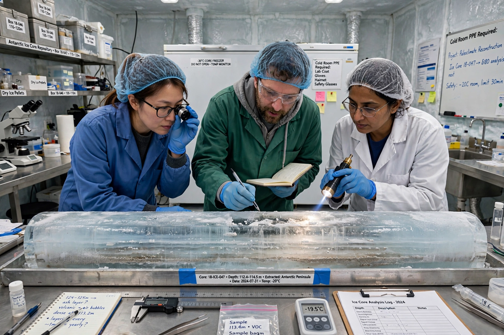

Paleoclimatology

Paleoclimatology (or palaeoclimatology) is the study of changes in Earth's climate throughout its history, using natural archives — called proxies — to reconstruct temperature, precipitation, atmospheric composition and other variables before the era of instrumental records.
Proxy archives
Key proxies include ice cores from Greenland and Antarctica, whose trapped air bubbles preserve ancient atmospheres for up to about 800,000 years (and beyond in newer drilling); ocean and lake sediment cores recording the isotope ratios of foraminifera shells; tree rings (dendroclimatology); corals; cave speleothems; pollen records; and borehole temperatures. Oxygen isotope ratios (δ¹⁸O) in ice and shells are a primary thermometer and ice-volume indicator.
Major findings
Paleoclimate research established the pacing of the ice ages by Milankovitch cycles, revealed abrupt events such as Dansgaard–Oeschger oscillations and the Younger Dryas, and documented warm intervals like the Eocene hothouse and the Paleocene–Eocene Thermal Maximum, a rapid carbon-release event often compared with present warming. Reconstructions such as the "hockey stick" graphs of the last two millennia inform debates about current climate change.
Methods
Chronologies are built from radiometric dating, layer counting and correlation of marker horizons such as volcanic ash. Proxy records are calibrated against instrumental data and combined statistically, with uncertainty growing further back in time.
See also: Climatology, Ice core, Dendrochronology, Climate change.